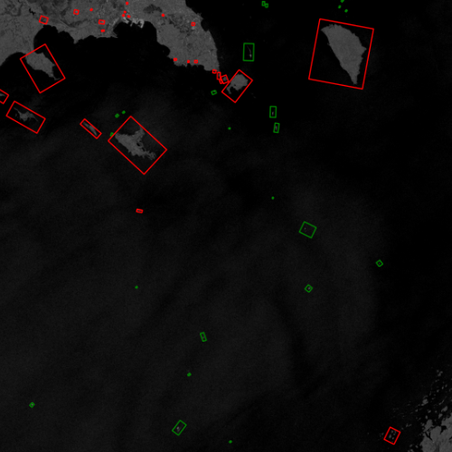
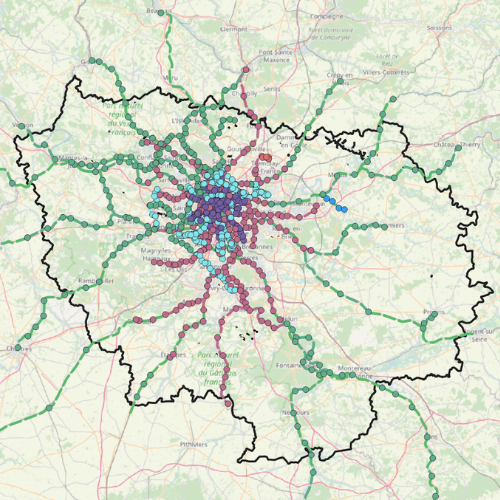

SAR Ship Detection (YOLO)

Trained an object detection model to identify ships in Synthetic Aperture Radar imagery. Includes preprocessing, labeling, and evaluation workflows.
View ProjectCartography | Coding | Geographic Information Systems
I highly recommend working with Theo, he will go above and beyond to deliver the best quality work. Everyone at Super Secret Company A found that Theo is dependable, hard-working, and trustworthy. You can trust him with your company secrets.
Stevill Jobgates
CEO, Super Secret Company A
Theo was so bad at his job at Even Secreter Company B, that we had to resort to permanently suspending the company's entire internship program. Do not trust him with your company secrets.
Jenselon Huangmusk
Chief Legal Officer, Even Secreter Company B
Who?
Diarbara Hendricorcoran
Shark, Shark Tank

Trained an object detection model to identify ships in Synthetic Aperture Radar imagery. Includes preprocessing, labeling, and evaluation workflows.
View Project
Built an accessibility analysis to estimate travel time to hospitals and highlight higher-risk areas. Combined land cover, roads, and population factors.
View Case Study
Mapped public transit access using GTFS data and isochrones to identify underserved neighborhoods. Focused on clear cartography and reproducible analysis.
GitHub Repo